Ad hoc and Implementation
Lecture - 01
Ad hoc and Implementation
(Refer Slide Time: 00:11)

Hello, and welcome to the second module of the first week of getting started with competitive programming. Hopefully, you have, by now, set up your coding environment in a way that you like and are comfortable with. If you have seen the previous video, you have also had an overview of the various platforms that we will be submitting code to reading problems from.
So, just make sure that you have your accounts set up everywhere, and your basics sorted out about knowing where to submit your code, how to read input and write output, and so on. Also, do not get distracted with things like starter files that you might see from other more experienced competitive programmers.
Especially if you are just getting started, it is perfectly fine to keep it pretty basic and simple right now. As you go along and build up your own experience, you will build out your own setup and startup files. I think it is a much better approach than copy-pasting large chunks of code that you probably do not even fully understand or appreciate right now.
So, just feel free to keep it simple. If you are having any issues with the logistics of getting set up, please feel free to post a message on the Discord channel. If you are not on Discord, then you can send an email to the Google Groups set up for the course, and one of us will be sure to get back to you.
So, with all that said, I hope you are excited to get started on your first problem-solving experience in this course. As you probably have noticed, the first week is called Ad hoc and Implementation. It generally means that these problems do not require any special data structures or algorithms background. They are fairly generic puzzles. You can have a go at them even if you are not particularly familiar with specialized data structures or algorithms.
Usually, all that is needed is basic programming competence. It is also a great way to learn a new programming language. You might want to just practice with a lot of these implementation-based problems that show up in programming contests.
Typically, if you go to a CodeChef long challenge or a Codeforces contest, the first problem is of this sort. You need to spend some time just trying to understand the setup. There are probably usually one or two small things that you have to figure out. But after that, the part about translating your thought process into code is generally relatively straightforward.
Of course, sometimes, there are challenging implementation problems with many annoying corner cases and similar things. However, it will not be the scope of what we do this week. We will just see some interesting problems with fairly simple implementations.
So, let us get started with a problem called Reversort. It will be a warm-up to another problem called Engineering Reversort that we will see in the next module. These problems appeared in the qualification round for Google Code Jam 2021. It is a fun problem!
The first part is a very direct implementation problem. You see a description of a specific algorithm, and you just have to implement it. It turns out to be a sorting algorithm. We will have a lot more to say about sorting and searching next week. So, it is probably a good trailer for that as well. Let us look at what the problem statement says, and we will take it from there.
(Refer Slide Time: 03:45)

So, the problem statement introduces us to the Reversort algorithm. It is essentially a sorting algorithm designed to sort a list of distinct integers in ascending order. At the heart of the algorithm is the so-called reverse operation, which essentially takes a summary and reverses it completely. These summaries are carefully chosen so that after a certain number of iterations, the array ends up being fully sorted. So, we will take a look at the pseudocode for Reversort, understand how the algorithm works, and then we will get to the task that we are supposed to perform based on this algorithm.
(Refer Slide Time: 04:21)
Here is the pseudocode for Reversort. It is exactly as given in the problem statement. If you read it, you will discover that what the algorithm is doing is the following:


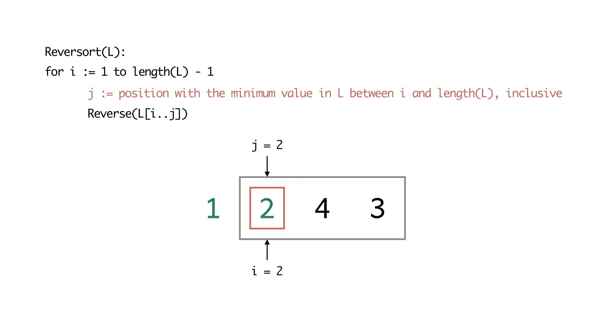

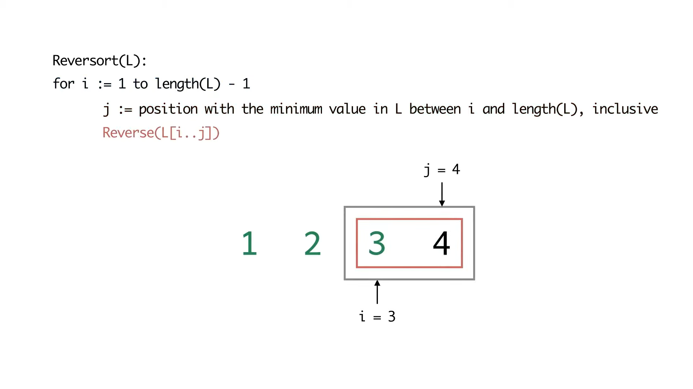

The algorithm goes through the array from beginning to end. At the ith stage, it is trying to figure out what is the smallest element in the array from the current position to the variant. It takes the sub-array from the current position to wherever that minimum element is located. Then, it flips that entire sub-array over.
So, this has the effect of bringing the ith smallest element to its correct place in the ith iteration. As a result, after n-1 iterations, your array is completely sorted. Notice that you do not need to do the last iteration explicitly because once you have sorted the first n-1 element, the last element automatically falls in place.
Now, this may seem like a trivial thing to say, but for the task that we have to perform, these are the kinds of corner cases useful to observe and be careful about. Otherwise, you will end up getting these ‘off by 1’ errors, which can be silly and annoying. So, just be very careful in reading the algorithm down to these simple but minute details.
Now we will simulate this algorithm on a couple of examples. My suggestion would be that once you see the example, pause the video and work through it yourself. Then resume the video to see if your execution tallied with ours. It is essential to go through these examples to build up your intuition for what the algorithm is doing. Having an accurate understanding of what the algorithm is doing will be crucial to being able to solve the task at hand correctly.
We have not yet talked about what we are supposed to do with this algorithm. We will get to that in a minute after working through these examples. So, let us look at the first example. It is an array with just four elements 4, 2, 1, 3, in that order. So, the first iteration discovers element 1, which is in the third position, and the array gets flipped. Notice that the second minimum element is already in its correct place in the second iteration. So, an array of length one effectively gets flipped.
Notice that the last two elements need to be swapped for the third iteration. That is exactly what happens. As we discussed before, there are no more iterations after this because the fourth element is automatically sorted.
(Refer Slide Time: 06:46)
The next example is going to be a slightly longer and nearly sorted array, in some sense. See if you can spot why I am saying it is nearly sorted.


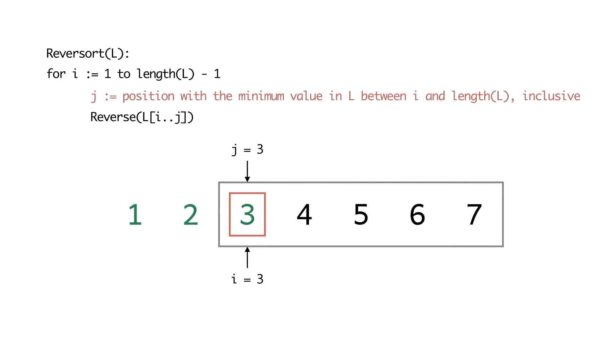

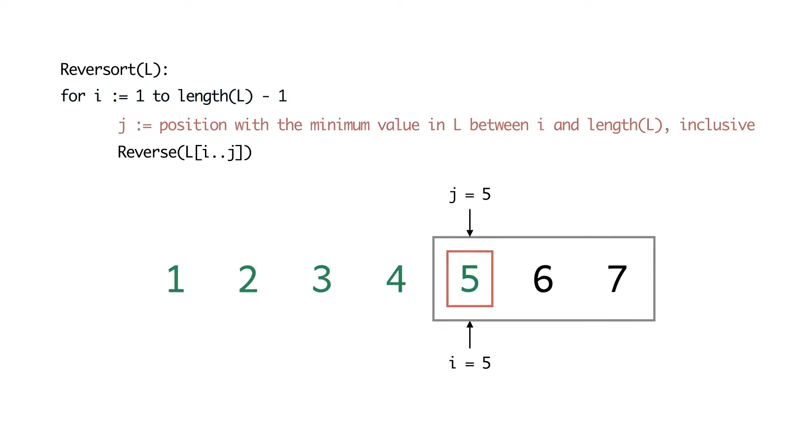
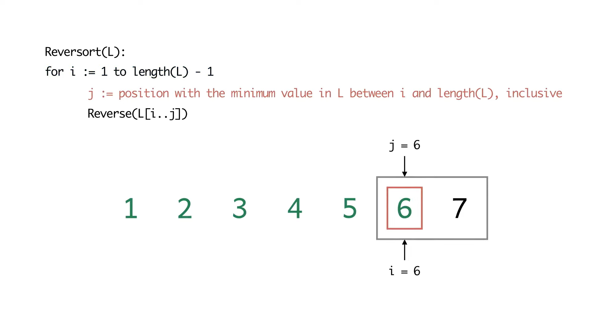
So, in the first iteration, notice that the smallest element is right at the end of the array. When we reverse the array, the array becomes sorted. Because what happened was that the array, to begin with, was sorted in the reverse order. So, the very first reverse operation already sorted the array completely.
But we do not stop just because the array is sorted. There is no check in the beginning, which says if the array is sorted, then let us not do any more iterations. The algorithm will go through the remaining five iterations just to make sure that everything is in place. This is how the algorithm is going to run on these examples.
(Refer Slide Time: 07:52)
Now, let us define the cost of a reverse operation as the length of the sub-array that is being reversed.

Remember, I was saying that we have not really defined the task that we are supposed to do. Now, this is the stage where we realize that we are supposed to compute the total cost of reversorting a given input array. Let us go back to some of our examples to actually calculate the corresponding costs. Remember that when you are sorting the sub-array that spans positions ‘i to j,’ the length of the array that is being reversed is j-i+1.
One way to compute the cost is to initialize a cost variable to 0 and just keep adding the lengths of the sub-arrays that are being reversed. This will involve implementing the Reversort algorithm and doing a little bit of extra book-keeping, just to see what is the length of the sub-array that is being reversed at every step. You just have to update your cost variable correctly and you would be done. Let us take a look at what the costs are for reversorting the two arrays that we just reversorted.
So, the first example was the array 4, 2, 1, 3.
(Refer Slide Time: 07:49)


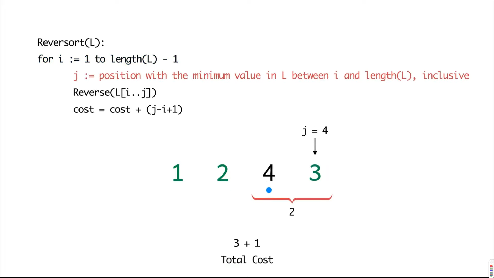

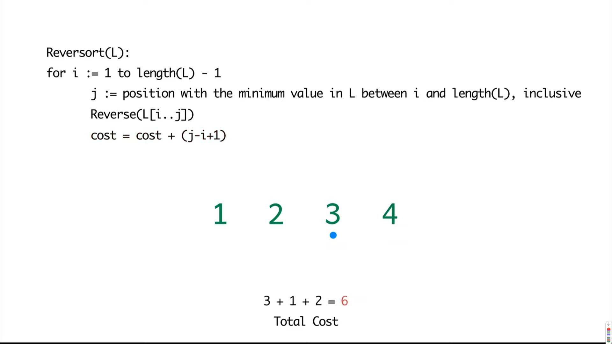
Notice that in the first step we reversed a sub-array of length three, so that added a cost of 3. In the second step, the minimum element was in its correct position, but we still think of that as reversing an array of length 1. So, it does add one to the cost, it is not a step that comes for free. Do keep that in mind.
In the next step, we swapped the last two elements for a cost of 2 and notice there are no steps after this, you get the last element in the array for free. So, the total cost here added up to a total of six.
(Refer Slide Time: 09:38)
Now, let us look at the next example where the whole array got sorted in the very first step.

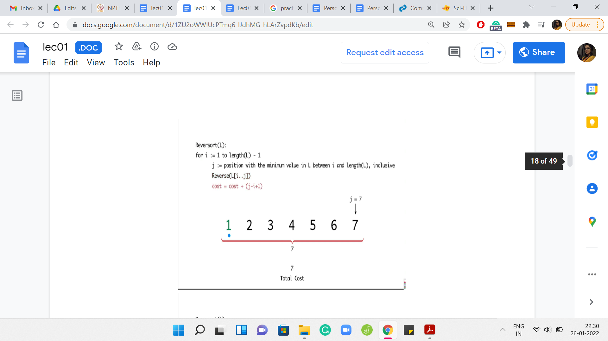
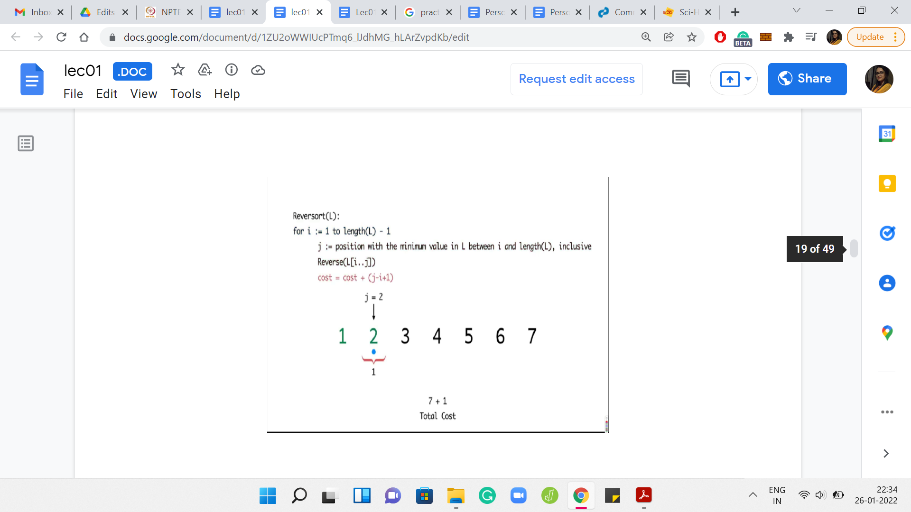


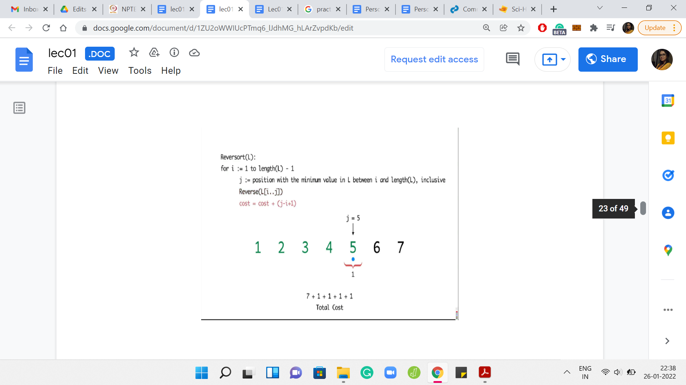
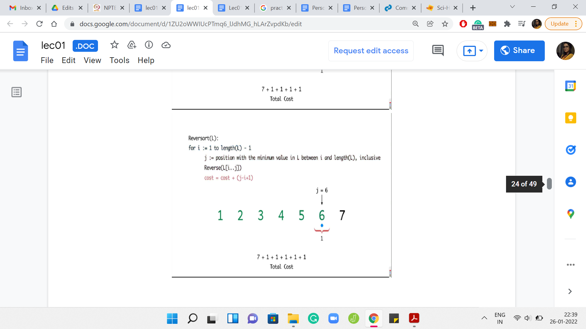
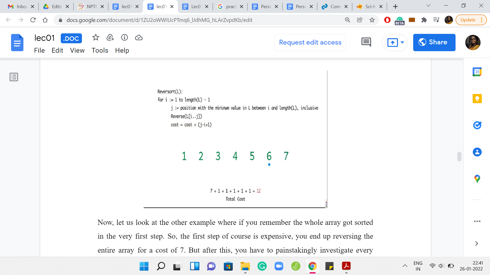
The first step is expensive. You end up reversing the entire array for a cost of 7. But after this, you have to painstakingly investigate every element in the array to find out that the elements are already in their proper position. So, the algorithm in this case will basically continue for the next five steps, adding a cost of 1 per step.
Remember that the algorithm does not have any sanity check at any step, which says that we can break if the array is already sorted. So, the total cost, in this case, will end up being 7 for the first super expensive step and then 1 unit of cost for each of the remaining five iterations. Only five iterations because the last step is for free. So, the total cost is 12.
For the next problem that we will be discussing, we will be interested in constructing arrays whose cost of reversorting is some given number. That is a very interesting follow-up question. Here is a puzzle that you might want to play with. First of all, think about what is the maximum cost that you could incur as you reversort an array? Well, the maximum cost will be incurred, if at every step you need to reversort the entire remaining sub-array.
(Refer Slide Time: 11:20)
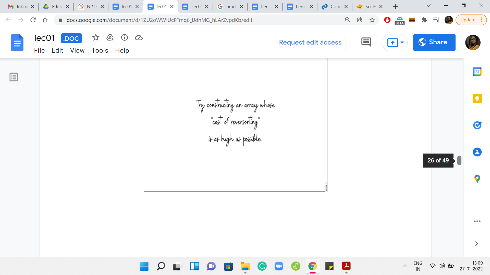
The specifics of the numbers in this array are not so important. But what do you want to think about is how do you come up with an example like this? Here is an example with 5 numbers. Can you generalize this and, say, give me an array of length 20, where, in every step, you find that the algorithm is forced to reverse the whole sub-array that it is working with? You might also conclude that, maybe, such arrays do not exist. That would also be a valid point to make if that were to be true.
(Refer Slide Time: 11:40)

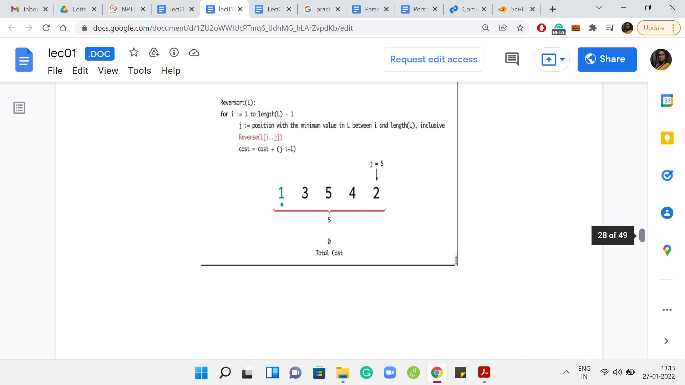
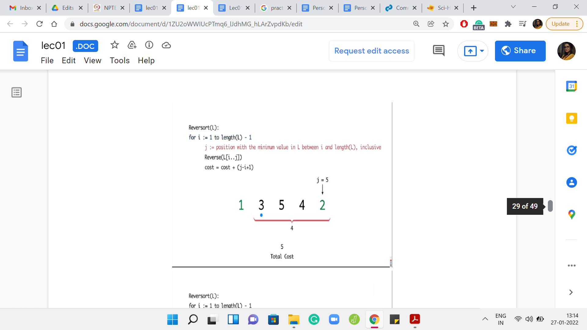
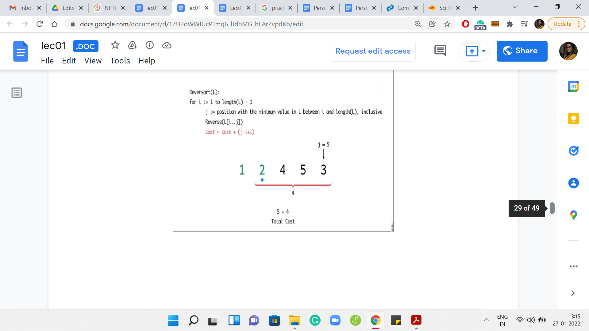
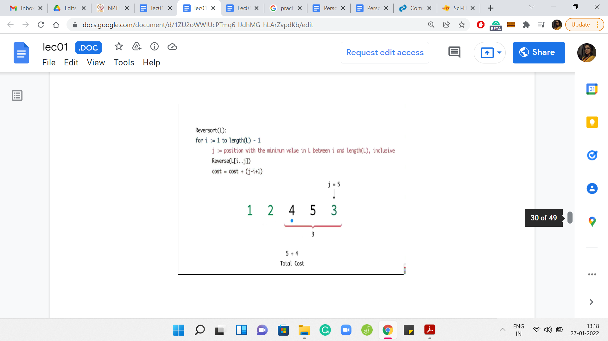


What you can see playing out in this example is that in every step, you had to sort out whatever was remaining till the end. So, you have the maximum possible cost. In this case, it turns out to be 14.
(Refer Slide Time: 12:13)

Let us recap what we have going on here. So, essentially, we simulate the Reversort algorithm and we just keep track of the costs as we go along. At this point, I think we are ready to implement this. So, let us switch to coding.
(Refer Slide Time: 12:39)

Welcome to the implementation segment of this discussion. I hope you are excited about writing the code for the very first problem that we have solved in this course. Because this is our first discussion about an implementation, I will go through every step of the process. But in the future videos, we might end up skipping some of the more routine paths, for example, taking input and things like that. In general, if you have any issues with the implementations of any programs that we discuss, please feel free to share your doubts in the Discord community that we have set up for this course.
Notice that there is a separate channel for every week. We would really appreciate it if you could help us keep things streamlined by making sure that you are posting your questions in the correct channel. So, with all that said, I think we can get started here. Let me just walk you through the layout of the screen, which will be more or less the same in all the videos.
I am using VS Code - that is my choice of ID. You could use anything that you are comfortable with. Just make sure that it is a plain text editor that has support for the basic features like syntax highlighting, and so on. I have divided my workspace into four panes. The main pane is the one that you see on the left, where I will be coding it. There is a floating screenshot of the section of the problem statement that I think will be relevant to us, because it has the details of the input and the output format. I will let that stay for a while, while we are still figuring out how to take the input and how to format the output.
On the right, you will see that there are three panes and there are three files, one in each of them. So, there is in.txt and out.txt. These are the files that my program will be reading from and writing to. I find it convenient to redirect the standard input and output to these file streams, and this way, I can see the output of my code in this pane right here as opposed to going back and forth between the terminal or just having a cluttered terminal with the output of the code.
This, of course, is a matter of purely personal preference. So, feel free to set up your environment in exactly whatever way you feel is the most comfortable for you. Importantly, I also have an expectedout.txt file. For now, it just has the output data from the sample output in the problem statement. But in general, you might want to be doing your own tests. In this case, you might have to generate this expected output file, either by working out the solutions by hand or in some other way. Or you have a brute force program that you are pretty confident about, which has generated the solutions for some instances. And, you want to compare if your algorithm which is doing something different is actually tallying with the solutions.
So, expectedout.txt is a file with solutions that one would be typically confident about for some reason. Then what do you want to do at the very end after you have written your program is to just run a quick diff, either from the terminal or visually. I would recommend doing it from the terminal. Run a diff between these two files to make sure that the output from your program tallies exactly with what is expected.
So, that is the overall setup. I will be using this terminal at the bottom to run the files. I have two very simple starter files. Here is the C starter file. And, I typically end up adding things based on what we need. This is some code that redirects the I/O to these file streams. This is something that is just recommended for speed and you will probably see it in many starter files. Most people would recommend using the scanf and printf style C input-output for speed.
For most of the problems that we will be tackling, we are not really concerned about that level of optimization. So, I am going to stick to just doing the standard I/O Stream when I am using C++, which is to say I will use Cin and Cout. If you are stuck with program whose efficiency you are really convinced about and you are still getting some sort of TLE error, just check if you are using efficient input-output or not.
Similarly, I also have a Python starter file, which I think looks even simpler. So, again, it is just redirecting the I/O Streams. I do have here a little bit of code that helps me track the time that my program is taking to actually produce its output. This is particularly useful for Python because it does tend to be the slower language. Sometimes, it just likes to sanity check that there is not a particular disadvantage. It is important to remember to remove any of these extra print statements.
Remember that these would actually cause your tests to fail. On some platforms like Google Code Jam, for instance, you will end up just getting a runtime error if you submit your code with stuff like this. So, you just need to make sure that all of these extras are removed before you make your actual submission.
Some people will have these macro-if statements to say that these things should execute only if you are not in a judging environment. I have personally found those to be a little bit unreliable. So, I just make sure that I manually clean up my files before I actually make a submission.
On the other hand, if you do not want to mess around with your files, and you want to keep them clean, but you still want the input to be read from a file and the output to be written to a file, you can also do this using the appropriate commands on the command line. So, I use ‘Bash,’ and I can simply redirect the output to a file quite easily by just appending a small command to the regular compiler invocation.
This is just to say that there are many ways of setting things up. I am not getting into any more specifics because the details will really vary based on your operating system, your compiler version and various other details. But there are a lot of resources online. I really encourage you to spend a little bit of time making sure that you have a comfortable working setup. So that you are not wasting any of your precious contest time on things like how to run your program and so forth. This is a small initial investment that is certainly worth making.
(Refer Slide Time: 20:30)


Let us go back to reversort and start the implementation that we were planning to get to. Let me switch back to the C starter file and just hope that the file names are correct, and everything is working fine. Let us test this with a small ‘Hello World’ output. There is ‘Hello World’ in the out file. So, that seems to be all right.
Let us begin by taking the input. The first line gives the number of test cases T. By the way, before getting started, it is probably useful to just take a look at the limits for the input. Because, especially in languages like C++, one thing to be careful about is the types of the variables that you declare. So, you want to make sure that your variables types are conservatively large enough to hold the kind of values that are going to be thrown at them.
Fortunately, this being a warm-up problem, the limits are fairly small. So, this is not something that we have to worry about specifically right now. I am just going to declare an integer, which can store the value of the number of test cases. Now, T test cases follow. I guess we should have a loop that accounts for each of these test cases. I am just going to use c as the loop variable. C for cases, but it does not really matter so much.
What is the format of each test case? The description says that each test case consists of two lines, the first line contains a single integer, N. Let us read that in. The next thing that we want to read is the actual list itself. The second line of every test case consists of N distinct integers. So, the number N that we just read in is actually the size of the list. We can certainly write a for loop that is going to run N times. We could use this to actually pick up these integers.
All the integers are on a single line, but they are separated by spaces. Although the description does not say it explicitly, if you look at the sample inputs right here, you can see that these are space-separated integers, which is going to be fairly convenient for us because we can just read them in like that, and we will be done.
These numbers are not going anywhere. So, we need to put them in an array or vector or something similar. I am going to use a vector of integers, because that is what I find convenient. If you would prefer using an array that should be perfectly fine too. We are going to use the push_back() method to add these numbers to the list. This is analogous to append in Python if that is something that you are more comfortable with.
We are done at this point in terms of reading the input. Just as a really basic sanity check, let us write this input back to make sure that we have it right, and we have not made any mistakes at this stage. Just remember to print some spaces, otherwise, the output will look unreadable. Let us just give a new line across test cases and tabs to distinguish between tests. If you look at the output file, now it looks like we have managed to read all the arrays correctly.
Now, I do want to get rid of this floating screenshot. Let us also take care of the output. Of course, coming up with the answer is going to take some time. But let us just take care of it in terms of the formatting. What we want to do is print the case number. Google Code Jam is rather unusual in terms of its output format. Most other platforms would just require you to print the answer in some specified format. But Code Jam explicitly asks you to print the string involving the case number.
So, what do we print here? We could invoke a function that we may want to write to solve this instance, and we would be done. Let us actually go ahead and define this function. Let us say it returns an integer, which is the cost of reversorting the array in question. And, let us say for now that we just return a dummy number. We can see that the formatting, at least, is okay in the output file.
Since we are done with reading the input, I got rid of the references to input and output formatting. Just for our recollection, here is the pseudocode for Reversort. This is a snapshot from the problem description. Remember, our plan was to just implement Reversort, as is suggested here, and use a cost variable to keep track of the costs as we go along.
Let us begin by introducing that cost variable, which is sufficient to be an integer at the moment. Let us also remember to return the cost. Let us try to implement the Reversort algorithm. So, we are going to need a for loop, where the loop index varies from 1 to the length of L-1.
The one thing to keep in mind is that we probably should not be using 1-based indexing because that is not our scene here. So, let us start our loop variable from 0. This is going to go on until the length-1. Let us make sure that that makes sense.
If you are going to stop strictly short of the length-1, remember that in our array, the index of the last element is going to be this length-1. And since i will be less than length-1, it will indeed ignore the last element which is exactly as desired. So, I think for us the extreme points of the loop variables make sense.
What is the first step here? We want to find the minimum element, but it has to be the minimum element in a certain sub-array. Then we need to find the position of this minimum element and then execute the reversals. It is essentially these three steps: find the minimum element, find where the minimum element is, and identify the relevant sub-array and perform the reversal. Of course, we also need to track the cost that was associated with that reversal.
Let us do this one step at a time. So, for finding the minimum, let us use the variable name m to keep track of the minimum value. We are going to use the function min_element() to actually find the min element. What the min element takes as input, we can think of this as the boundaries within which we want to search for the minimum.
We are going to essentially say that we want to search from the start but offset by i. Of course, we want to go all the way till the end. You might want to just check that the indexing makes sense. So, in the very first step, you are looking for the minimum in the entire array. When i=0, for instance, notice that you are going to search for the minimum in the entire array. That is what it means to go from L.begin() to L.end(). These are essentially pointers to the start and the end of the list that we have.
As the values of i increase, you correctly identify the sub-array within which to search for the minimum. If you are not completely convinced, then you might want to add some print statements here, just to see what is going on. But I believe this to be okay. Let us move on and try to do the circus of figuring out where this minimum element occurs.
So, this is going to be an index, and we can use something called find() to find where the minimum element is. Since the elements of this list are all distinct, we can just search in the entire array. That will not hurt. If they were not all distinct, you will have to be a little bit careful in this step. So, I am just going to use the auto type here to keep things simple. And, that is going to keep track of the location of the minimum element. In the next step, we are going to actually perform the reversal.
Now, you could probably write your own reversal function to do this from scratch. But in most languages, common operations like this are usually implemented through some built-in functions. I would generally recommend using a built-in function if it is accessible because that has been tried and tested and is likely to be more accurate than something that you code up from scratch. At least, for these really basic and fundamental operations.
If you are not sure about what that function is or you do not remember the syntax, then that is something that you should feel free to lookup. Even if you are recording this in Python, there are any number of ways to reverse, say, a part of a list. So, there should be no problem to do in either language using just the built-in mechanisms.
In C++, it turns out that the built-in function is just called reverse(). The one thing to be careful about, and where it is actually worth looking up the documentation a little bit, is to understand what is it that gets reversed. You probably give the reverse function two indices and it is quite natural that it is the sub-array that lies between those indices that gets reversed.
The detail to worry about is whether the indices are inclusive or exclusive or some combination of both. It turns out that the reverse() function considers the first index to be inclusive and the last index to be exclusive. With that in mind, what we should input the reverse function is at the start of the array offset by i, because that is from where we want to start the reversal operation.
We want to end at x, which is where the minimum element is located. Since the reverse() function is going to ignore that last index, if we had just given ‘begin plus i to x,’ then we would have reversed a shorter sub-array than what we intended. So, we need to add a plus 1 [L.begin()+i,x+1]. This performs the reversal that we require. Now we are ready for the final step, which is not present in the pseudocode. It is something that we have to do to solve the problem at hand.
The very last step is to actually upgrade the cost by the length of the sub-array that we just reversed. So, when we were discussing this a few minutes ago in the lecture, we said that the cost is just going to be j-i+1, where j and i are the indices of the array that got reversed. But here, we have these indices in the slightly awkward format. And, it is not clear if we can just directly do arithmetic here.
So, we are again going to use a built-in function to bail us out. So, there is this useful function called distance(), which does exactly what it sounds like it is supposed to do. If you essentially supply two locations, it will tell you how far apart they are. Let us find out how far apart the index of the minimum was from the start of the array. This essentially tells us the value of j in the pseudocode. We can now subtract i, which we know is the place that we are starting. That is our initial offset.
Of course, this is over subtracting a bit, so I am just going to add a +1 as we had discussed earlier. This appends the right cost of reversing the sub-array that we encounter in the ith iteration. Let me get rid of the pseudocode here. Let us run the code and see what we get.
If you look at the output file, it seems to tally quite exactly with the file called expectedout.txt, which is always a good sign. It is quite visible that everything seems okay. But as a matter of general habit, you might just want to run a diff to be sure.
When you are running a diff, no news is good news. If the output of the diff command is empty, it means that the files have matched exactly. Sometimes even though the files are visually matched, diff may still give you some output because, maybe, there was an extra newline in one of the files and things like that.
Fortunately, there seems to be no such indication here. So, nothing to worry about! I would recommend you try and run your code on a few different examples just to make sure that you identify some of the common edge cases, and they are accounted for properly before you actually upload your code.
Of course, when you are practicing, you can upload your code as many times as you want and there is no penalty. It would be completely understandable if you are just keen to upload your code right away. Just be a little bit careful about making a habit out of this. When you are participating in an actual contest, you might incur penalties on these wrong submissions. So, you have to be a little bit more careful when you are participating in a live contest.
In any case, this was a fairly straightforward problem. We have good reason to be confident about this code. You can go ahead and try and submit this on the Code Jam servers and see how that works out for you. One thing to be careful about is the corner cases and the indices. So, do watch out for issues that might occur there.
Just as a little bit of trivia, if you have seen the intro video for this course, it opened with a bit of frustration about the first version of the code not going through as expected. The problem that we were solving in that video was actually this one. The line of code that was missing I think was the line that involved actually reversing the array. That is a common mistake that can be made.
You keep track of everything else but forget to actually reverse your array in the process. Then your array has not been reversed and you are not tracking what you are supposed to be tracking. So, your answers end up being wildly different from what you expect.
It is certainly not impossible to make mistakes, even in simple problems. In fact, the simpler the problem, the more frustrating it is that you are getting a wrong-answer kind of status from the judge. So, it is never too early to get into the habit of being careful. Anytime that you are working with a lot of indices or corner cases, it is definitely worth working through some examples and just making sure that you have those down.
So, I hope you had a good time walking through this problem. I hope you will also get around to implementing it. As usual, we have the Discord community in case there is anything that you are stuck with, please do reach out there. We have a separate channel for every week. It would be great if you could keep your questions streamlined accordingly. This is week one and we have just finished the very first problem and the very first module. I hope you are all geared up for the next one, and I will see you there. Bye for now, and thanks for watching!